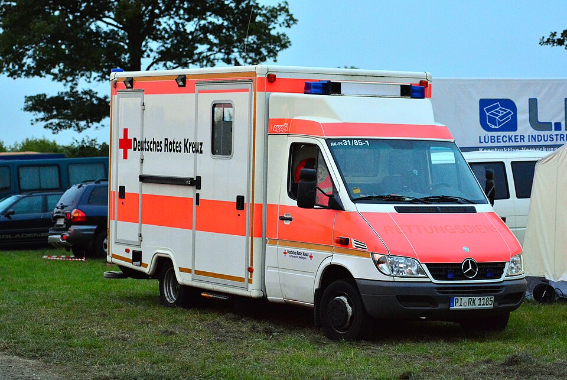
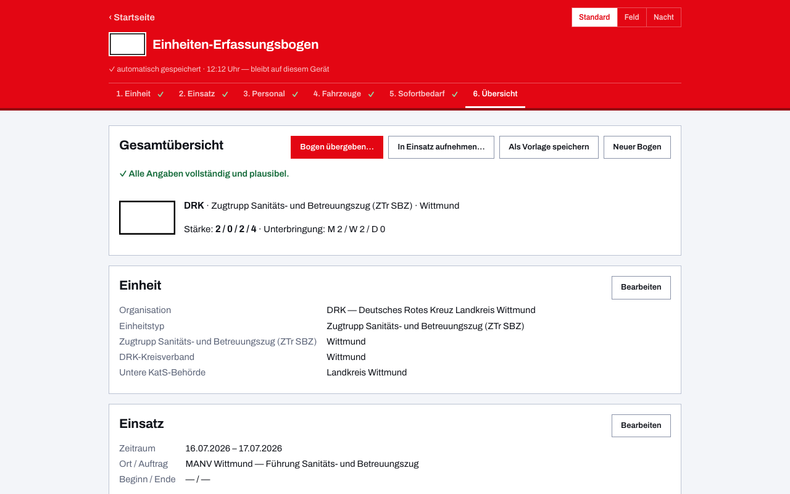
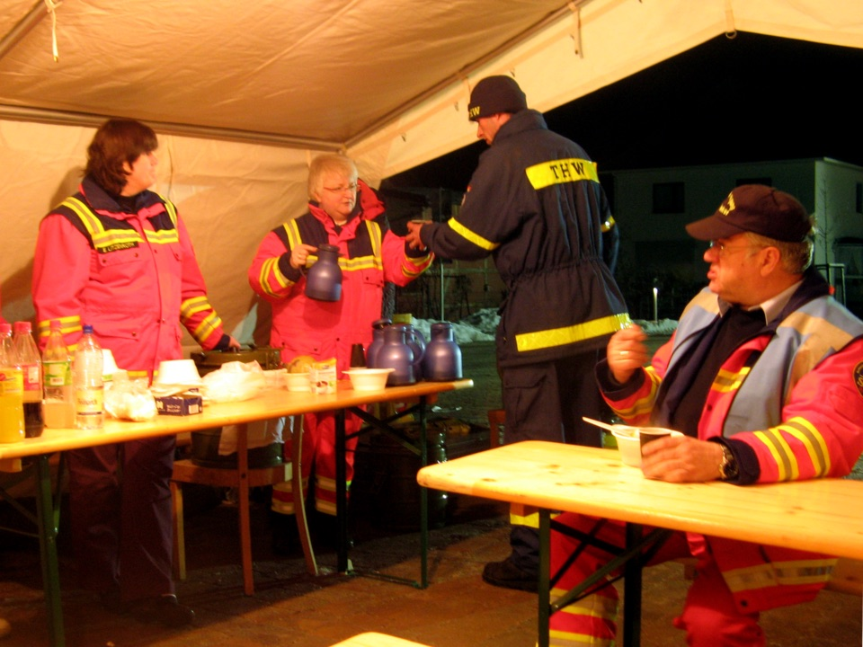

Einheiten-Erfassungsbogen für das DRK
Ob Einsatzeinheit im Katastrophenschutz, Bereitschaft im Sanitätsdienst oder Schnelleinsatzgruppe beim MANV: Wenn Rotkreuz-Einheiten ausrücken, braucht die anfordernde Stelle eine belastbare Meldung — Stärke, Führungskraft, Fahrzeuge, Sofortbedarf. Dieser digitale Einheiten-Erfassungsbogen ist das kostenlose Online-Tool dafür: Du füllst ihn am Bildschirm aus, druckst ihn als PDF im gewohnten Papier-Layout und übergibst ihn per QR-Code ohne Internet an den Meldekopf.

Vom Sanitätsdienst bis zur Bergwacht
Der Bogen ist BOS-übergreifend und kennt das Rote Kreuz als eigene Organisation: Begriffe, taktische Zeichen und die Kennfarbe passen sich an, sobald du das DRK gewählt hast. Das deckt die ganze Breite ab — die Einsatzeinheit mit Sanitäts- und Betreuungsteil genauso wie Kreisbereitschaften, Wasserwacht und Bergwacht. Gezählt wird die Stärke in der gewohnten Gliederung Führer / Unterführer / Mannschaft / Gesamt; Namen und Funktionen kannst du erfassen, für die Meldung brauchst du sie nicht.
Einsatzeinheiten der Länder als Startpunkt
In den Katastrophenschutz-Vorlagen der Länder sind viele Sanitäts- und Betreuungseinheiten enthalten, deren Träger die Hilfsorganisationen sind — samt Teileinheiten und Funkrufnamen nach Landesregelung. So einen Bogen lädst du, passt ihn auf deinen Kreisverband an und speicherst ihn als Vorlage: Bei der nächsten Alarmierung oder Übung streichst du nur noch, was nicht mitfährt.
Für die bundesweit gebräuchlichen Sanitätsdienst-Formationen liegen in der App unter „Beispielbögen" außerdem fertige Bögen der Schnelleinsatzgruppe Sanität (SEG San) und aller sieben Teileinheiten des Behandlungsplatzes 25 (BHP 25) bereit — nach der DRK-Dienstvorschrift 400 und der Richtlinie „Der Behandlungsplatz 25" des DRK-Landesverbands Saarland, mit Rollen bis auf die einzelne Funktion.
Übergabe, wo kein Netz ist
Sammelplatz in der Tiefgarage, Betreuungsstelle in der Turnhalle, Bereitstellungsraum auf dem Feldweg: Die App arbeitet nach dem ersten Aufruf vollständig offline. Der QR-Code auf der letzten PDF-Seite trägt den kompletten Bogen in sich — die Führungsstelle scannt ihn und hat die Meldung im Gerät, ohne Verbindung zwischen den Geräten. Wie daraus die laufend summierte Übersicht über alle eingetroffenen Einheiten wird, zeigt Meldekopf digital.


Häufige Fragen aus dem Roten Kreuz
Wo bleiben die Daten der Helferinnen und Helfer?
Auf deinem Gerät. Es gibt keinen Server, keine Cloud und keine Konten; weitergegeben wird nur, was du selbst als PDF, Datei oder QR-Code übergibst — nachzulesen in der Datenschutzerklärung. Namen sind ohnehin optional: Für die Stärkemeldung genügen die Zahlen.
Funktioniert das mit Einheiten anderer Träger zusammen?
Ja. Ein Meldekopf sammelt DRK-, Feuerwehr-, THW- und Johanniter-Einheiten in derselben Übersicht — der Bogen ist für alle BOS und Hilfsorganisationen derselbe, nur Begriffe und Zeichen passen sich an.
Was kostet die App?
Nichts. Sie ist freie Software unter der EUPL-1.2, ohne Werbung und Bezahlschranke; der Quellcode liegt offen auf GitHub.